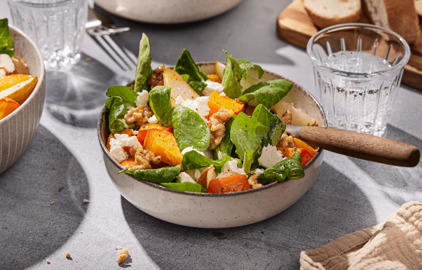

Kürbissalat
Zutaten
- 200 g Feldsalat
- 600 g Hokkaidokürbis
- 6 EL Olivenöl
- 2 Birnen
- 40 g Feta
- 40 g Walnüsse
- 2 EL Balsamicoessig
- 4 EL Gemüsebrühe
- 2 TL Ahornsirup
- Salz, Pfeffer
Zubereitung
- Backofen auf 180 °C Ober- und Unterhitze vorheizen.
- Feldsalat waschen, trocknen und in eine Schüssel geben.
- Kürbis würfeln, mit 2 EL Olivenöl beträufeln und 20 Minuten backen.
- Birnen in Spalten schneiden.
- Feta, Birnen und Walnüsse zum Kürbis geben und weitere 10 Minuten backen.
- Aus Olivenöl, Balsamico, Brühe, Ahornsirup, Salz und Pfeffer ein Dressing anrühren und unter den Salat heben.
- Kürbisgemüse und Dressing zum Feldsalat geben und mischen.

Leckerer hausgemachter Kürbissalat.